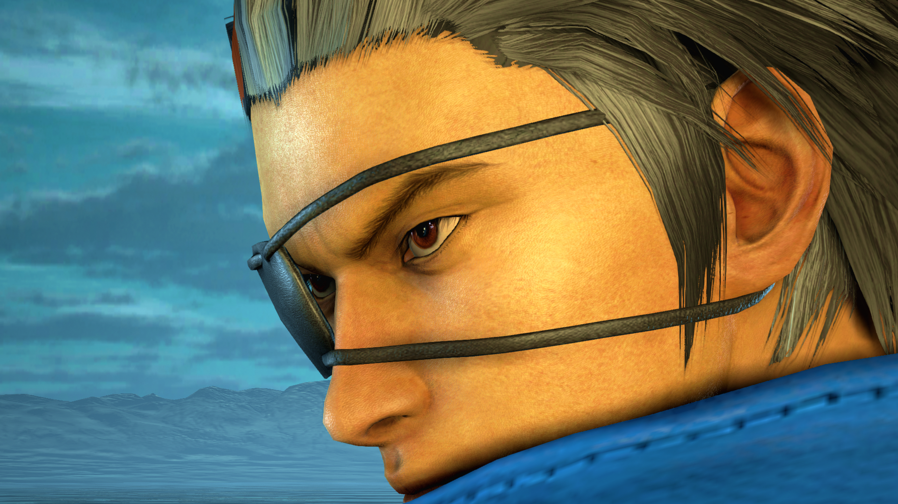

Tekken 7 Hwoarang Tips to help you learn everything you need to know about playing as Hwoarang, strategies, frame data, and custom combos. If you are new to Tekken 7 and you need a character whose strength lies in pure offense, you will not find a better character than Hwoarang. This character does not like to sit-back and likes to be in the face of his opponents 24×7. Moreover, he has plenty of offensive moves to keep you going for the longest of matches.
In this Tekken 7 Hwoarang Tips Guide, I have detailed everything you need to know about playing as Hwoarang, his custom combos, frame data, and more.
Hwoarang in Tekken 7 relies on his confusing mix-ups game that forces his opponents into making mistakes followed by punishing them. Thanks to his mix-ups and stances, his damage output of his combos is crazy. Even if you do not rely on combos, his mix-ups alone can rack up damage fast. In addition to this, his Rage Art is safe and he has good Power Crush.
However, in order to dish out consistent amount of damage, you must be in the face of your opponents at all times since his ranged game is a bit weak. In addition to this, his punishment attacks are not the greatest out there and mediocre at best. Another thing that you need to keep in mind that in his default stance, his high crushes are not great.
Coming to his combo potential, you can use d/f + 2, d + 3, 4, b + 4, Screw!, u/f + 3, 4, 3 as a beginner combo. His hard and damaging combos require the usage of his stances. For this purpose, let us break this combo out: d/f + 2, f, f + 4, RFF, 3, 4, RFS, b + 4, Screw!, [3+4], RFF, f + 3, u/f + 3, 4, 3. For this combo, you need to land f, f + 4 perfectly, otherwise, it will not connect.
After it connects, you should find Hwoarang in his Right Foot Forward stance. While in the RFF stance, input 3, 4 and b + 4 to land the Screw!. The Screw! should put him into his Left Foot Forward stance. While in this stance, dash forward and input 3 + 4 to head into RFF stance again. Now simply input f + 3 and the finisher. If you manage to wall carry an opponent, you can use d/f + 1, d + 1, WS + 4, 4, RFF + 3. If you need something more damaging, try [3 + 4], RFF, f + 3, 1, WS + 4, 4, RFF + 3.
If you are new to Tekken 7 and you need a character whose strength lies in pure offense, you will not find a better character than Hwoarang. This character does not like to sit-back and likes to be in the face of his opponents 24×7. Moreover, he has plenty of offensive moves to keep you going for the longest of matches.
In this section of the guide, we have detailed some combos of Hwoarang. Since combos in a game like Tekken 7 have no limits, you should easily discover plenty of more than these:
| Combos | Difficulty |
|---|---|
| d/f + 2, f + 4, b + 4 Screw!, f, F + 4, 3, 4, b + 4 | 5 |
| CH b + 4, d + 3, 4, b + 4 Screw!, d + 3, 4, b + 4 | 6 |
| CH b + 4, SSR f + 2, 3, 4, b + 4 Screw!, RFF f + 3, u/f + 3, 4, 3 | 6 |
| CH b + 4, RFF 3 ~ 4 Screw!, SSR, f, F + 4, 3, f + 1, 2, 3, d/b + 4 | 5 |
| u + 3 + 4, d/b + 4, f, 1, d/f + 4 Screw!, Forward Dash, 3, 4, b + 4 | 7 |
| d/f + 2, f + 4, b + 4 Screw!, Forward Dash, RFF f + 3, 3, f, 3, f, d + 3 + 4 | 8 |
| d/f + 2, f, F + 4, 3, 4, b + 4 Screw!, Forward Dash, RFF f + 3, u/f + 3, 4, 3 | 6 |
| d/f + 2, 2, 3, 3, F, 1, Forward Dash, 1, 2, 4, b + 4 Screw!, WR + 3, f, F + 3 | 7 |
| d/f + 2, d/f + 4 Screw!, Forward Dash, 3 ~ 4, f, 2, Forward Dash, 3, 4, b + 4 | 9 |
| d/f + 2, f, F + 4, 3, 4, b + 4 Screw!, Forward Dash, RFF f + 3, 3, f, d + 3 + 4 | 8 |
| u + 3 + 4, d/b + 4, f, 2, Forward Dash, 3, 4, b + 4 Screw!, Forward Dash, RFF f + 3, u/f + 3, 4, 3 | 7 |